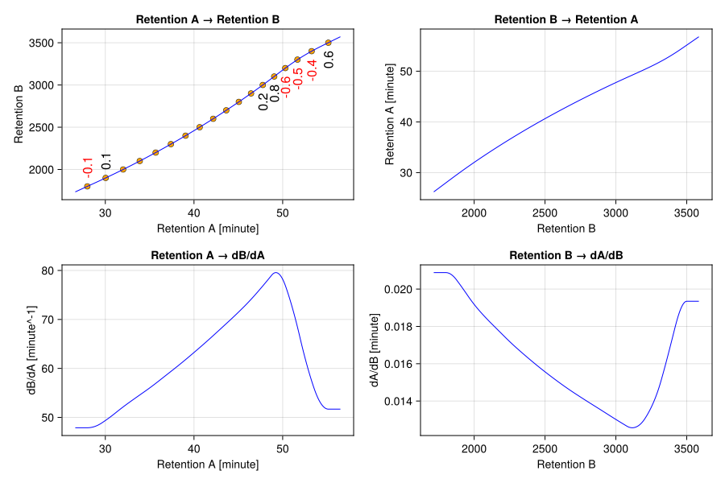

Overview
Mapping rationale
Retention mapping converts an irregular axis (time or distance) into a stable, comparable index so chromatograms from different runs can be aligned, interpolated, and compared on a common grid. This makes retention behavior reproducible across batches, instruments, and methods while preserving ordering and monotonicity.
A continuous, differentiable mapping does more than align coordinates: it enables intensity-aware transforms via the Jacobian. When you warp the axis, the mapping derivative provides a principled way to rescale intensities so areas and peak shapes remain physically meaningful. This yields consistent peak integrals across transformed domains, supports smooth interpolation, and avoids artifacts from piecewise or discontinuous mappings.
Mapping points are typically collected from standards with known reference positions. In gas chromatography, a common example is an n-alkane ladder, which yields paired arrays of retention times and Kováts retention indices (Kováts 1958). JuChrom can infer these points from GC-MS alkane ladder data with findalkanes and expose the accepted mapper anchors with alkaneladdercalibrationpoints. Another approach uses a curated set of internal standards (e.g., a few stable compounds spiked into every run), producing matched retention pairs that anchor the mapping across batches (Skoog et al. 2007).
JuChrom retention mapping
JuChrom provides fitmap to infer an empirical, smooth mapping function from paired retention values in domain A (e.g., retention times) and reference values in domain B (e.g., Kováts indices). The fit constructs a cubic B-spline with a fixed smoothing penalty λ and validates that the resulting curve is strictly increasing. Concretely, the objective minimizes squared residuals plus a curvature penalty based on the spline’s second derivative: large changes in slope are penalized, which discourages wiggles and yields a smoother, more stable mapping between anchor points. In parallel, nonnegative first-derivative values are enforced at the spline constraint points. The final spline is then checked for strict monotonicity on a dense validation grid so that the stored RetentionMapper supports both forward mapping and reliable reverse mapping via the monotonic inverse.
For most users, the primary tuning parameter when applying fitmap is smoothing strength (λ). Larger values emphasize smoothness over exact fit to the anchor points, while smaller values track the anchors more tightly. The default λ=1e-8 is tuned for normalized RT -> RI calibration and is intended to avoid boundary-of-monotonicity wiggles.
JuChrom includes visual diagnostics for a fitted mapper, letting you inspect the forward and inverse fits side by side. The plotting helpers load automatically once a Makie backend is available.
Example
# Load JuChrom
using JuChrom
# Load CairoMakie for plotting
using CairoMakie
# Known mapping points: retention times (minutes) and Kováts indices.
# JuChrom reexports Unitful, so unit literals work without `using Unitful`.
retention_times = [
27.972, 30.043, 32.011, 33.884, 35.679, 37.398, 39.049, 40.636, 42.164,
43.636, 45.058, 46.431, 47.759, 49.046, 50.296, 51.669, 53.266, 55.149,
]u"minute"
kovats_indices = [
1800.0, 1900.0, 2000.0, 2100.0, 2200.0, 2300.0, 2400.0, 2500.0, 2600.0,
2700.0, 2800.0, 2900.0, 3000.0, 3100.0, 3200.0, 3300.0, 3400.0, 3500.0,
]
# Fit a smooth, strictly increasing mapping function
mapper = fitmap(retention_times, kovats_indices)RetentionMapper with 18 calibration points
├─ Domain A (input):
│ ├─ Range: 27.972 to 55.149 (minute)
│ └─ Type: Float64
├─ Domain B (output):
│ ├─ Range: 1800.0 to 3500.1 (unitless)
│ └─ Type: Float64
├─ Spline:
│ ├─ Order: 4 (cubic)
│ ├─ Knots: 18
│ └─ Coefficients: 18
└─ Fit quality:
├─ Min residual: 0.000
├─ Avg residual: 0.050
└─ Max residual: 0.246
The printed RetentionMapper summary provides a compact overview. For a closer look, plot the forward map, its derivative, and the residuals. Pass reverse=true to include the inverse map and inverse derivative.
# Visual diagnostics (forward map, derivative, and residuals)
fig = plot(mapper; size=(900, 600))
save("retention_mapper.svg", fig)
The black and red numbers at some anchor points show how much the fitted mapping departs from those anchors. The inferred mapping is fully satisfactory, but you may want to tune the smoothing strength if the anchor points are noisy or not fully trustworthy. In the derivative plots, for example, visible oscillation indicates that a larger λ may be appropriate. Increasing λ reduces overfitting (less wiggle, more stability), while decreasing λ tracks the anchors more tightly.
Let us fit a smoother mapper with λ=1e-6 and examine the effect on the derivative plots.
# Fit mapping function with stronger smoothing
mapper_smooth = fitmap(retention_times, kovats_indices, λ=1e-6)
fig = plot(mapper_smooth; size=(900, 600))
save("retention_mapper_smooth.svg", fig)
In the derivative plots the mapping is noticeably smoother, but it now deviates more from the anchor points, as shown by the residuals. Whether the suppressed wiggles reflect real structure that should be modeled or are noise that should be smoothed away is a judgment call for the analyst. If a fit fails monotonicity validation, use a larger λ or inspect the anchor points for false or noisy calibration steps.
Let’s continue with the original mapper (inferred from using the default λ=1e-8) and use it to compute retention indices for a few retention times, including extrapolation beyond the domain.
ri = applymap(mapper, 41.5u"minute") # single value2556.0738101176826rts = [10, 29.3, 35.0]u"minute"
ri = applymap.(mapper, rts) # dot form broadcasts over the vector3-element Vector{Float64}:
942.419162321347
1863.6762753628889
2161.669741979931Mappings are defined over the anchor domain. Values outside that domain are linearly extrapolated using the slope at the nearest boundary. Use warn=true on applymap / invmap / derivmap / derivinvmap or the raw* variants to surface extrapolation during analysis.
To invert the mapping (e.g., from Kováts to retention time), use invmap.
ris = [1853.2, 3137.3, 3501.0]
rts = invmap.(mapper, ris) # dot form broadcasts over the vector3-element Vector{Quantity{Float64, 𝐓, Unitful.FreeUnits{(minute,), 𝐓, nothing}}}:
29.083241962041456 minute
49.50735321513896 minute
55.16737920782503 minuteTo transform intensities with the Jacobian, use the derivative of the mapping. If ri = f(t), then d(ri)/dt is the local stretch factor; to preserve area, you divide the intensity by this slope at the same time point. However, even when intensities are reported as unitless, they usually represent counts accumulated over a finite scan interval, so the implied unit is typically time^-1. Here we assume the given intensities are counts acquired over a 0.5‑second scan interval, and therefore divide by 0.5 seconds. Because the intensities and d(ri)/dt must use the same time unit for the division to cancel cleanly, we convert the Jacobian to the unit s^-1. This is done by specifying the input‑domain unit as u"s".
scantimes = [1802.5, 1803.0, 1803.5]u"s"
intensities = [1000, 4000, 3500] / 0.5u"s"3-element Vector{Quantity{Float64, 𝐓^-1, Unitful.FreeUnits{(s^-1,), 𝐓^-1, nothing}}}:
2000.0 s^-1
8000.0 s^-1
7000.0 s^-1dridt = derivmap.(mapper, scantimes, rA_unit=u"s")3-element Vector{Quantity{Float64, 𝐓^-1, Unitful.FreeUnits{(s^-1,), 𝐓^-1, nothing}}}:
0.8233801550854055 s^-1
0.8235701146798693 s^-1
0.8237601952602442 s^-1The derivative tells you how much the Kováts retention index changes per unit time. To transform the intensities associated with each scan time, divide by the Jacobian (i.e., d(ri)/dt).
ints_transformed = intensities ./ dridt3-element Vector{Float64}:
2429.0116632608774
9713.805609750285
8497.618651977404The transformed intensities are now expressed per unit of retention index rather than per unit time, reflecting the change of variables.
The Jacobian must be evaluated at the retention coordinate of the measurement whose intensity is transformed. For a chromatographic trace with one intensity per scan, the scan retention time is the appropriate coordinate. For sequentially scanned MS data, however, different m/z channels in the same scan are measured at slightly different times. In that case, a single scan-level Jacobian applies the same correction to all ions in a scan and is only an approximation.
For the most accurate RT -> RI transformation of ion traces or MS scan matrices, first correct the scan retention time to the acquisition time of the specific m/z channel, then evaluate the Jacobian at that ion-specific retention time:
rt_ion = mzretention(scan_retention, mz; order=:descending, ...)
ri_ion = applymap(mapper, rt_ion)
jacobian = derivmap(mapper, rt_ion)
intensity_per_ri = intensity_per_rt / jacobianThis distinction is mainly relevant for sequential quadrupole-like acquisition. For simultaneous m/z acquisition, or when the m/z scan duration is negligible relative to chromatographic peak widths and mapper curvature, the scan-level Jacobian can be a reasonable approximation.
Mapping tools at a glance
| Function | Use case |
|---|---|
fitmap | Infer mapping function from paired points |
applymap | Map retention domain A → retention domain B |
invmap | Map retention domain B → retention domain A |
derivmap | Jacobian d(ri)/dt for intensity scaling |
derivinvmap | Inverse mapping derivative |
rawapplymap | Unitless variant of applymap |
rawinvmap | Unitless variant of invmap |
rawderivmap | Unitless variant of derivmap |
rawderivinvmap | Unitless variant of derivinvmap |
retentions_A, retentions_B | Anchor vectors used to fit the mapper |
rawretentions_A, rawretentions_B | Unitless anchor vectors |
retentionunit_A, retentionunit_B | Stored units for the anchor domains |
extras | Metadata attached to the mapper |
mapmin, mapmax | Numeric minimum and maximum value of the input domain |
invmapmin, invmapmax | Numeric minimum and maximum value of the output domain |
rawmapmin, rawmapmax | Unitless variant of mapmin and mapmax |
rawinvmapmin, rawinvmapmax | Unitless variant of invmapmin, invmapmax |
For full API details, see Mapping tools.
JLD2 support
JuChrom also ships a JLD2 extension so RetentionMapper objects can be stored and restored with JLD2. The extension loads automatically once JLD2 is available.
using JLD2
# Save and load single mapper
save_object("retention_mapper.jld2", mapper)
mapper_loaded = load_object("retention_mapper.jld2")
# Save multiple mappers under their own names and load them back
jldsave("retention_mappers.jld2"; mapper, mapper_smooth)
mapper_reloaded = JLD2.load("retention_mappers.jld2", "mapper")RetentionMapper with 18 calibration points
├─ Domain A (input):
│ ├─ Range: 27.972 to 55.149 (minute)
│ └─ Type: Float64
├─ Domain B (output):
│ ├─ Range: 1800.0 to 3500.1 (unitless)
│ └─ Type: Float64
├─ Spline:
│ ├─ Order: 4 (cubic)
│ ├─ Knots: 18
│ └─ Coefficients: 18
└─ Fit quality:
├─ Min residual: 0.000
├─ Avg residual: 0.050
└─ Max residual: 0.246
mapper_smooth_loaded = JLD2.load("retention_mappers.jld2", "mapper_smooth")RetentionMapper with 18 calibration points
├─ Domain A (input):
│ ├─ Range: 27.972 to 55.149 (minute)
│ └─ Type: Float64
├─ Domain B (output):
│ ├─ Range: 1799.1 to 3504.3 (unitless)
│ └─ Type: Float64
├─ Spline:
│ ├─ Order: 4 (cubic)
│ ├─ Knots: 18
│ └─ Coefficients: 18
└─ Fit quality:
├─ Min residual: 0.008
├─ Avg residual: 1.137
└─ Max residual: 4.256
References
- Kováts E (1958): Gas-Chromatographische Charakterisierung organischer Verbindungen. Teil 1: Retentionsindices aliphatischer Halogenide,Alkohole, Aldehyde und Ketone. Helvetica Chimica Acta 41: 1915-1932.
- Skoog DA, Holler FJ, Crouch SR (2007): Principles of Instrumental Analysis. 6th ed. Thomson Brooks/Cole.